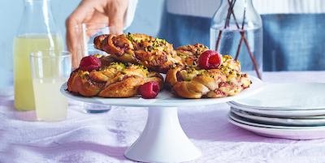

Boller med hindbær og pistacie
2 timer og 30 min
Øvet
Ingredienser (30 boller)
- 3 dl mælk
- 50 g gær
- 1 1/2 dl sukker
- 1/2 tsk. salt
- 150 g blødt smør
- 1 æg
- 11-12 dl Amo hvedemel
- 100 g pistacienødder
- 1 vaniljestang
- 200g tempereret smør
- 2 dl sukker
- 4 spsk. hindbærpulver eller 4 spsk. hindbærsyltetøj eller frosne hindbær, optøede og moste
- 1 æg
- 25 g pistacienødder
- 1/2 dl vand
- 3 spsk. sirup
Sådan gør du:
- Sæt ovnen på 200 grader
- Lun mælken til 37 grader.
Smuldr gæren ned i en skål og opløs den i mælken lidt ad gangen og arbejd det sammen til en smidig dej.
Lad dejen hæve tildækket til dobbelt størrelse i ca. 60 minutter. - Hak pistacienødderne fint.
Flæk vaniljestangen og skrab kornene ud.
Bland smør, sukker, hindbær, hakkede nødder og vaniljekorn til fyldet. - Rul dejen ud til en rektangel og bred fyldet ud på den lange
halvdel af dejen.
Fold dejen en gang på den lange side og skær i strimler.
Sno hver strimmel om sig selv og saml derefter i en spiral. - Læg bollerne på en bageplade med bagepapir og lad dem hæve tildækket til dobbelt størrelse i yderligere 60 minutter.
- Pensl bollerne med lidt sammenpisket æg og strø hakkede
pistacienødder over.
Bag bollerne i midten af ovnen i 10-12 minutter. - Bland vand og sirup. Tag bollerne ud af ovnen og pensl dem med sirupblandingen.